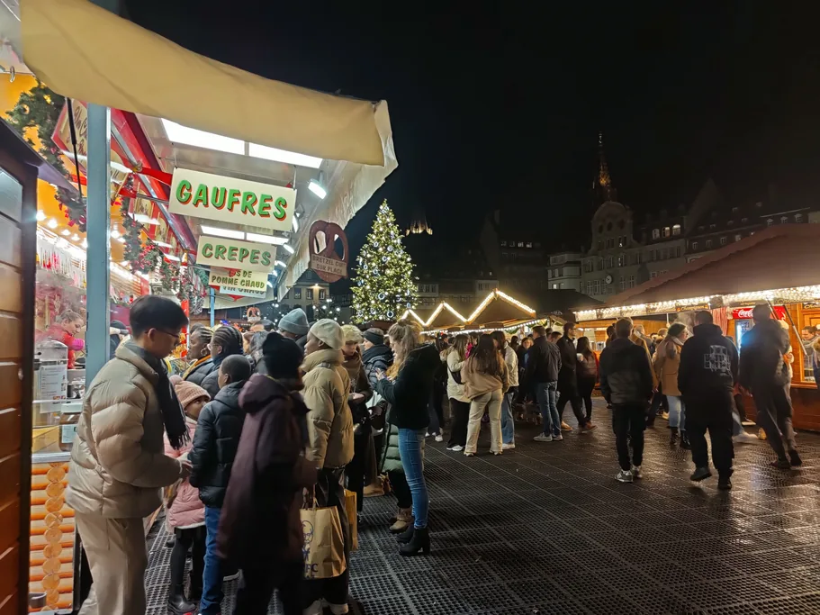

W grudniu słowa Capitale de Noël są w Strasburgu wszędzie: na transparentach rozpiętych nad ulicami, na kubkach na grzane wino, na bokach tramwajów. Można by pomyśleć, że hasło jest tak stare jak katedra. W rzeczywistości ratusz wymyślił je na początku lat 90., gdy jarmark stał się wielkim zimowym świętem całego miasta. Opiera się jednak na prawdziwej historii. Dzieje Christkindelsmärik sięgają 1570 roku. Jest to najstarszy jarmark bożonarodzeniowy we Francji, a w Alzacji zachowały się jedne z najstarszych pisemnych wzmianek o choince.

Audioprzewodnik po Strasburgu na własną rękę Dostęp od razu
Wśród świątecznych dekoracji łatwo przeoczyć, jak daleko sięga historia jarmarku. Drewniane budki na placu Broglie stoją tam, gdzie jarmark odbywa się od półtora wieku, ale niemal nic na miejscu nie przypomina o jego związku z reformacją. A przy katedrze, gdzie wszystko się zaczęło, trudno sobie wyobrazić, że kiedyś odbywał się tu jarmark świętego Mikołaja.
Najważniejsze w skrócie
| Co warto wiedzieć | |
|---|---|
| Hasło | Strasbourg, Capitale de Noël, od 1992 roku, wybrane przez samo miasto |
| Jarmark | Christkindelsmärik, jarmark Dzieciątka Jezus, od 1570 roku |
| Pochodzenie | Zastąpił jarmark świętego Mikołaja, gdy miasto przyjęło protestantyzm |
| Miejsce | Najpierw przy katedrze, od lat 70. XIX wieku na placu Broglie |
| Najstarszy | We Francji tak. W Niemczech są jarmarki z wcześniejszymi datami |
| Choinka | Sélestat: wpis z 1521 roku. Strasburg: opis ozdobionych drzewek w domach z 1605 roku |
| Odwiedziny | 3,05 mln odwiedzin w sezonie 2025, według ratusza |
Hasło o cztery stulecia młodsze od jarmarku
W 1992 roku Strasburg uznał, że jego jarmark bożonarodzeniowy powinien być czymś więcej niż rzędem drewnianych budek na jednym placu. Pod hasłem Strasbourg, Capitale de Noël jarmarki zaczęły odbywać się na kolejnych placach w centrum, a ulice rozświetliły świąteczne iluminacje. Pomysł się sprawdził. Ludzie zaczęli przyjeżdżać do Strasburga specjalnie na święta, a dziś miasto należy do najchętniej odwiedzanych zimowych celów podróży w Europie.
Żadnego oficjalnego tytułu Strasburg nigdy nie otrzymał. „Stolica Bożego Narodzenia” to hasło turystyczne, które miasto samo sobie wybrało. Historia, na której się opiera, zaczęła się jednak na długo przed jakimkolwiek marketingiem turystycznym.

1570: święty Mikołaj ustępuje miejsca Dzieciątku
W latach 20. XVI wieku Strasburg przyjął reformację i stał się jednym z najważniejszych protestanckich miast Świętego Cesarstwa Rzymskiego. Drukowano tu książki reformatorów, a teologowie wygnani z innych miejsc osiedlali się w mieście. Wkrótce przyszła kolej także na święta.
W średniowiecznym Strasburgu grudniowy jarmark odbywał się wokół katedry i był związany z 6 grudnia, dniem świętego Mikołaja. To on przynosił dzieciom prezenty. Protestanci byli temu przeciwni, bo kult świętych należał do tradycji, które reformacja odrzucała. Jarmark świętego Mikołaja zniesiono, a w 1570 roku przy katedrze otwarto nowy jarmark, Christkindelsmärik, czyli jarmark Dzieciątka Jezus. Odbywał się w ostatnich dniach przed Bożym Narodzeniem.
Ta zmiana przetrwała w nazwie. Po alzacku Christkindel oznacza „Dzieciątko Jezus”, a märik „targ”. Odtąd prezenty przynosiło Dzieciątko, a rodziny protestanckie zaczęły je wręczać w Boże Narodzenie zamiast 6 grudnia. Święty Mikołaj nigdy jednak całkiem nie opuścił Alzacji. Na początku grudnia piekarnie wciąż sprzedają mannele, małe ludziki z ciasta drożdżowego.
Cztery stulecia i kilka zmian władzy
W ciągu ponad czterech stuleci władza w Strasburgu kilkakrotnie się zmieniała. W 1681 roku wolne miasto Rzeszy przeszło pod panowanie króla Francji. Po wojnie 1870–1871 weszło w skład Cesarstwa Niemieckiego, a w 1918 roku wróciło do Francji. W czasie II wojny światowej miasto było okupowane i faktycznie anektowane przez nazistowskie Niemcy, aż do wyzwolenia w listopadzie 1944 roku.
Jarmark przetrwał to wszystko, choć kilka razy zmieniał miejsce. Odbywał się kolejno przy katedrze, na placu Château i na placu Klébera, a na początku lat 70. XIX wieku przeniósł się na plac Broglie. Odbywa się tam do dziś.
Nie oznacza to, że nigdy nie miał przerwy. W 2020 roku jarmark odwołano z powodu pandemii, według ratusza po raz pierwszy od wielu stuleci.

Choinka: jedne z najstarszych wzmianek
Często mówi się, że choinka pochodzi ze Strasburga. Historia jest nieco bardziej skomplikowana. W Alzacji zachowały się jedne z najstarszych pisemnych wzmianek o tradycji choinki, a jedna z nich pochodzi ze Strasburga.
- 1521, Sélestat. W rachunkach miejskich Sélestat, miasteczka na południe od Strasburga, zapisano, że 21 grudnia, w dniu świętego Tomasza, leśnikom zapłacono 4 szylingi za pilnowanie młodych jodeł w miejskim lesie przed świętem. Oryginalna księga jest przechowywana w archiwum miejskim Sélestat, a jej kopię można zobaczyć na świątecznej wystawie w Bibliotece Humanistycznej. Samo miasto uważa ten wpis za pierwszą pisemną wzmiankę o choince.
- 1605, Strasburg. Anonimowy autor opisuje, jak w Boże Narodzenie mieszkańcy Strasburga stawiali w domach jodły i ozdabiali je różami z kolorowego papieru, jabłkami, opłatkami, złotkiem i cukrem. To jeden z pierwszych opisów ozdobionego drzewka we wnętrzu domu.
- Lata 40. XVII wieku, znów Strasburg. Miejscowy teolog luterański skarżył się w piśmie, że jego parafianie poświęcają więcej uwagi drzewkom w domach niż Słowu Bożemu. Skoro kaznodzieja zaczyna ganić jakiś zwyczaj, to znaczy, że ten już się zakorzenił.
Nie oznacza to, że Strasburg wymyślił choinkę. Wpis z 1521 roku mówi tylko o pilnowaniu drzew przed świętem. Nie ma w nim nic o tym, czy je ozdabiano. Drzewka na Boże Narodzenie stawiano także w innych miastach. Tallin na przykład wiąże swoją tradycję z dokumentem archiwalnym z 1441 roku, choć publiczne drzewo na rynku nie musiało oznaczać tego samego co ozdobiona choinka w domu.
Alzackie wzmianki należą do najstarszych w Europie, a strasburski opis z 1605 roku jest szczególnie cenny dla historii ozdobionej choinki w domu. Dziś najbardziej znany świąteczny symbol miasta nie stoi już w domu, lecz na środku placu Klébera. Od 2000 roku co roku ustawia się tam ogromną jodłę o wysokości około 30 metrów.
Najstarszy we Francji, ale nie w Europie
Historia Christkindelsmärik sięga 1570 roku, dlatego uważa się go za najstarszy jarmark bożonarodzeniowy we Francji. W Niemczech są jednak jarmarki jeszcze starsze. Drezdeński Striezelmarkt po raz pierwszy wspomniano w 1434 roku, a Budziszyn datuje swój jarmark na 1384 rok. Tytuł „największego” również budzi wątpliwości, bo wszystko zależy od tego, co się liczy: budki, odwiedzających czy powierzchnię.
Gdzie zobaczyć tę historię w mieście
Spór z XVI wieku zostawił w Strasburgu ślady, do których łatwo dojść pieszo:
- Kościół św. Tomasza: protestancki od 1524 roku i do dziś jedna z głównych świątyń protestanckich w mieście.
- Saint-Pierre-le-Vieux (Stary Kościół św. Piotra): dwa kościoły, katolicki i protestancki, stoją obok siebie, każdy z własnym wejściem.
- Katedra: to przy jej murach zaczął się jarmark.
- Plac Broglie: miejsce, w którym od lat 70. XIX wieku odbywa się Christkindelsmärik.
Bez historycznego kontekstu łatwo przejść obok i nie zauważyć, jak bardzo przeplatają się tu dzieje religijne Strasburga i historia jego jarmarku bożonarodzeniowego.
Druga strona sławy
W ciągu kilku tygodni wydarzenia świąteczne w Strasburgu odnotowują łącznie miliony wizyt, co stanowi duże obciążenie dla niewielkiego historycznego centrum. Najtłoczniej jest wokół choinki na placu Klébera i katedry, zwłaszcza w weekendy przed świętami, dlatego przyjemniej odwiedzać te miejsca w dni powszednie rano. W 2026 roku jarmark bożonarodzeniowy w Strasburgu potrwa od 27 listopada do 24 grudnia.
W czasie jarmarku historyczne centrum staje się strefą wzmocnionych środków bezpieczeństwa. Przy wejściach mogą być sprawdzane torby, a ruch samochodowy w centrum jest ograniczony.
Na plac Broglie z dworca idzie się około piętnastu minut. Rozkłady i bilety na pociągi z Paryża, Frankfurtu i Bazylei można sprawdzić w SNCF Connect, a w grudniu warto zarezerwować je wcześnie. Pociągiem regionalnym łatwo też dojechać do Sélestat, gdzie w okresie świąt Biblioteka Humanistyczna pokazuje kopię wpisu z 1521 roku.
Noclegu na grudzień najlepiej szukać z dużym wyprzedzeniem, bo dobre oferty w Strasburgu szybko znikają. Kto chce poznać miasto z przewodnikiem w okresie świątecznym, znajdzie wycieczki po Strasburgu na GetYourGuide.
Strasburg z audioprzewodnikiem
Audioprzewodnik TouringBee zaczyna się przy moście Kuss, pięć minut od dworca, i prowadzi przez całe historyczne centrum. Można zacząć o dowolnej porze i włączać każde nagranie po dotarciu do przystanku. Zwiedzanie łatwo przerwać i dokończyć następnego dnia, bo dostęp ważny jest przez cały rok.
- 33 przystanki, około 2,5 godziny we własnym tempie, nagrania po 1–3 minuty.
- Od 9,99 €, jednorazowa płatność, rok dostępu, 8 języków.
- Po wcześniejszym pobraniu trasy mapa i nagrania działają bez połączenia z internetem.
- Mapa pokazuje aktualną lokalizację, dzięki czemu łatwo znaleźć kolejny przystanek.
Wybierasz się do Strasburga?
Hasło „Stolica Bożego Narodzenia” to niedawny wymysł. Sam jarmark wyrósł natomiast ze sporu z XVI wieku o to, kto ma przynosić dzieciom prezenty. W grudniu, mijając budki na placu Broglie, warto pamiętać, że wszystko zaczęło się od zniesionego jarmarku świętego Mikołaja przy katedrze.
Najczęstsze pytania
Dlaczego Strasburg nazywany jest stolicą Bożego Narodzenia?
W 1992 roku miasto samo wybrało hasło Strasbourg, Capitale de Noël. Stoi za nim prawdziwa historia: dzieje Christkindelsmärik sięgają 1570 roku, co czyni go najstarszym jarmarkiem bożonarodzeniowym we Francji, a w Alzacji zachowały się jedne z najstarszych pisemnych wzmianek o choince.
Kiedy powstał jarmark bożonarodzeniowy w Strasburgu?
W 1570 roku. Gdy miasto przyjęło protestantyzm, jarmark świętego Mikołaja zniesiono i zastąpiono jarmarkiem Dzieciątka Jezus, który odbywał się w ostatnich dniach przed świętami.
Co znaczy Christkindelsmärik?
Po alzacku to „jarmark Dzieciątka Jezus”. Nazwa oddaje tę zmianę: Dzieciątko zastąpiło świętego Mikołaja jako tego, kto przynosi prezenty.
Czy to najstarszy jarmark bożonarodzeniowy w Europie?
Nie, najstarszy we Francji. Drezdeński Striezelmarkt po raz pierwszy wspomniano w 1434 roku, a Budziszyn datuje swój jarmark na 1384 rok.
Czy choinka pochodzi ze Strasburga?
W Alzacji zachowały się jedne z najstarszych pisemnych wzmianek o tej tradycji. Wpis z Sélestat z 1521 roku dotyczy pilnowania drzew przed świętem, a strasburski tekst z 1605 roku szczegółowo opisuje ozdobione jodły w domach. Nazywanie Strasburga kolebką choinki byłoby przesadą, bo drzewka na święta stawiano także w innych miastach, na przykład w Tallinie.
Czy „stolica Bożego Narodzenia” to oficjalny tytuł?
Nie, żadna organizacja go nie przyznaje. To marka turystyczna, której miasto używa od 1992 roku.
Warto przeczytać
- Przewodnik po Strasburgu: najważniejsze informacje o mieście
- Jarmark bożonarodzeniowy w Strasburgu: place, terminy 2026 i bezpieczeństwo
- Najlepsze jarmarki bożonarodzeniowe w Europie: Strasburg na tle Drezna, Kolonii i Wiednia
- Strasburg zimą: pogoda i co robić przed jarmarkiem i po nim
- Katedra w Strasburgu: fasada, witraże, zegar astronomiczny i 330 stopni

Eugene mieszka we Francji od 16 lat i pracował jako przewodnik, zanim założył sieć serwisów podróżniczych paris10.travel. Napisał audiotrasę TouringBee po Strasburgu.
Każda cena i godzina otwarcia na tej stronie jest sprawdzona u oficjalnego źródła na bieżący rok. Jeśli czegoś jeszcze nie ogłoszono, piszemy o tym wprost, zamiast zgadywać.
Audioprzewodniki TouringBee to nasz własny produkt. Linki do GetYourGuide, Booking.com i SNCF Connect są linkami partnerskimi. Przy rezerwacji przez nie możemy otrzymać niewielką prowizję, bez dodatkowych kosztów po stronie klienta. Te partnerstwa nigdy nie wpływają na nasze rekomendacje.